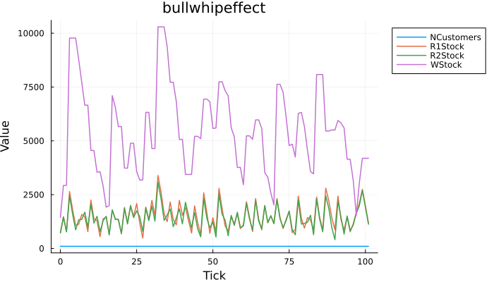
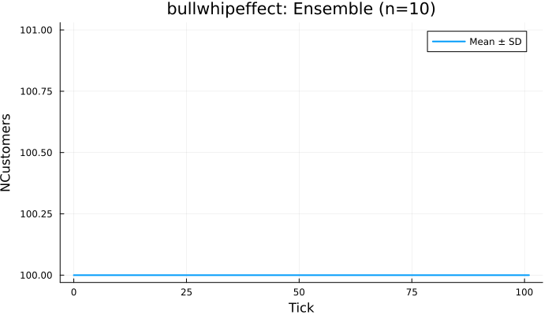
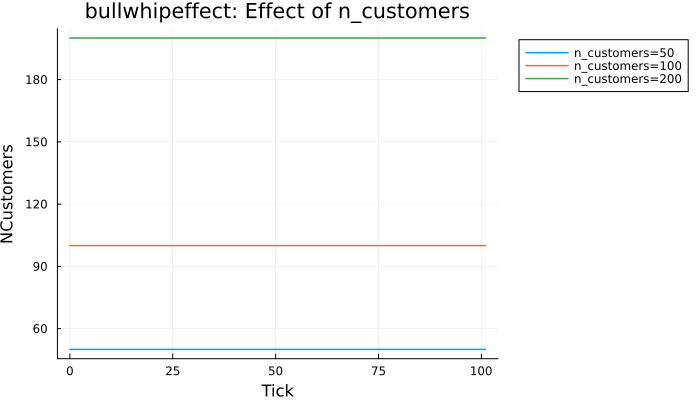

Bullwhip Effect
Overview
This vignette demonstrates the Bullwhip Effect model implemented in ArkModelZoo.jl using the Ark.jl ECS framework.
Parameters
| Parameter | Type | Default | Description |
|---|---|---|---|
n_customers | Int | 100 | n customers |
max_purchase | Float64 | 50.0 | max purchase |
n_retailers | Int | 1 | n retailers |
n_wholesalers | Int | 1 | n wholesalers |
n_distributors | Int | 1 | n distributors |
retailers_increment | Int | 3 | retailers increment |
wholesalers_increment | Int | 3 | wholesalers increment |
alien_amount | Int | 400 | alien amount |
return_in_weeks | Int | 10 | return in weeks |
num_ticks | Int | 100 | num ticks |
Source Code
The Julia code to run this model:
using ArkModelZoo
_, trajectory = run_bullwhip()Time Series

Ensemble Runs
Ten replicates with different random seeds, showing mean ± standard deviation.

Parameter Sensitivity
Varying n_customers.

Appendix: Source Code
This model is implemented in the Ark.jl Entity-Component-System (ECS) framework. The code is split into five files, each with a distinct role:
- Parameters: a mutable struct holding all configurable values.
- Components: lightweight data types attached to individual entities (agents).
- Resources: world-level shared state accessible to all systems.
- Systems: functions that operate on entities each tick, defining model behavior.
- Model: wiring that assembles the world, registers resources and systems, and provides the run entry point.
Parameters (parameters.jl)
The parameter struct uses @kwdef so that every field has a default value and can be overridden by keyword. These defaults match the original NetLogo model’s slider settings.
Base.@kwdef mutable struct BullwhipParams
seed::Int = 47822
n_customers::Int = 100
max_purchase::Float64 = 50.0
n_retailers::Int = 1
n_wholesalers::Int = 1
n_distributors::Int = 1
retailers_increment::Int = 3
wholesalers_increment::Int = 3
alien_amount::Int = 400
return_in_weeks::Int = 10
num_ticks::Int = 100
endComponents (components.jl)
Components are lightweight data types attached to individual entities (agents). Mutable structs hold per-entity state, while empty tag structs act as markers for the ECS query system to efficiently filter entities.
struct BullwhipDummy endResources (resources.jl)
Resources are world-level singletons shared across all systems, used for global state and aggregate statistics.
mutable struct BullwhipState
# Customer arrays
frequency::Vector{Int}
order_to_retailer::Vector{Float64}
lucky_number::Vector{Int}
n_customers::Int
# Retailer 1 (continuous growth forecast)
r1_stock::Float64
r1_buffer::Float64
r1_backorder::Float64
r1_demand_log::Vector{Float64}
r1_prediction::Float64
r1_prediction_log::Vector{Float64}
r1_order_to_wholesaler::Float64
# Retailer 2 (linear growth forecast)
r2_stock::Float64
r2_buffer::Float64
r2_backorder::Float64
r2_demand_log::Vector{Float64}
r2_prediction::Float64
r2_prediction_log::Vector{Float64}
r2_order_to_wholesaler::Float64
# Wholesaler
w_stock::Float64
w_buffer::Float64
w_backorder::Float64
w_demand_log::Vector{Float64}
w_prediction::Float64
w_prediction_log::Vector{Float64}
w_order_to_distributor::Float64
# Distributor
d_demand_log::Vector{Float64}
d_prediction::Float64
d_prediction_log::Vector{Float64}
# Return flag for alien strike recovery
return_flag::Int
end
function BullwhipState()
return BullwhipState(
Int[], Float64[], Int[], 0,
0.0, 0.0, 0.0, Float64[], 0.0, Float64[], 0.0,
0.0, 0.0, 0.0, Float64[], 0.0, Float64[], 0.0,
0.0, 0.0, 0.0, Float64[], 0.0, Float64[], 0.0,
Float64[], 0.0, Float64[],
0
)
end
mutable struct BullwhipStats
n_customers::Int
r1_stock::Float64
r2_stock::Float64
w_stock::Float64
end
BullwhipStats() = BullwhipStats(0, 0.0, 0.0, 0.0)Systems (systems.jl)
Systems contain the model logic and execute in a defined order each tick. Each system struct implements either initialize! (run once at setup) or update! (run every tick).
# --- Helper functions ---
function _bullwhip_frequency_chooser(rng)
temp = round(Int, randn(rng) * 2 + 2)
return temp > 0 ? temp : 1
end
function _bullwhip_order_chooser(rng, max_purchase::Float64)
mean_order = round(max_purchase / 2)
std_order = (max_purchase - mean_order) / 3
temp = randn(rng) * std_order + mean_order
if temp > 0
return min(temp, max_purchase)
else
return rand(rng) * (max_purchase - 0.1) + 0.1
end
end
function _bullwhip_predict_linear(demand_log::Vector{Float64})
n = length(demand_log)
if n == 0
return 0.0
elseif n == 1
return demand_log[1]
else
# Simple linear extrapolation from last two values
return demand_log[end] + (demand_log[end] - demand_log[end-1])
end
end
function _bullwhip_predict_continuous(demand_log::Vector{Float64})
n = length(demand_log)
if n == 0
return 0.0
elseif n == 1
return demand_log[1]
else
# Exponential growth extrapolation from last two values
if demand_log[end-1] > 0 && demand_log[end] > 0
ratio = demand_log[end] / demand_log[end-1]
return demand_log[end] * ratio
else
return demand_log[end] + (demand_log[end] - demand_log[end-1])
end
end
end
# --- Systems ---
struct InitBullwhipSystem <: System end
function initialize!(::InitBullwhipSystem, world::World)
params = get_resource(world, BullwhipParams)
rng = get_resource(world, RNGResource).rng
state = get_resource(world, BullwhipState)
nc = params.n_customers
state.n_customers = nc
# Initialize customer arrays
state.frequency = [_bullwhip_frequency_chooser(rng) for _ in 1:nc]
state.order_to_retailer = [_bullwhip_order_chooser(rng, params.max_purchase) for _ in 1:nc]
state.lucky_number = zeros(Int, nc)
# Compute initial stocks and buffers
stocks = nc * (rand(rng) * params.max_purchase * 0.5 + 1)
buffers = nc * rand(rng) * params.max_purchase * 0.5
# Retailer 1 (continuous growth)
state.r1_stock = stocks
state.r1_buffer = buffers
state.r1_backorder = 0.0
state.r1_demand_log = Float64[]
state.r1_prediction = 0.0
state.r1_prediction_log = Float64[]
state.r1_order_to_wholesaler = 0.0
# Retailer 2 (linear growth)
state.r2_stock = stocks
state.r2_buffer = buffers
state.r2_backorder = 0.0
state.r2_demand_log = Float64[]
state.r2_prediction = 0.0
state.r2_prediction_log = Float64[]
state.r2_order_to_wholesaler = 0.0
# Wholesaler
state.w_stock = stocks * 2
state.w_buffer = buffers * 2
state.w_backorder = 0.0
state.w_demand_log = Float64[]
state.w_prediction = 0.0
state.w_prediction_log = Float64[]
state.w_order_to_distributor = 0.0
# Distributor
state.d_demand_log = Float64[]
state.d_prediction = 0.0
state.d_prediction_log = Float64[]
state.return_flag = 0
# Update stats
stats = get_resource(world, BullwhipStats)
stats.n_customers = state.n_customers
stats.r1_stock = state.r1_stock
stats.r2_stock = state.r2_stock
stats.w_stock = state.w_stock
end
struct BullwhipStepSystem <: System end
function update!(::BullwhipStepSystem, world::World)
params = get_resource(world, BullwhipParams)
rng = get_resource(world, RNGResource).rng
state = get_resource(world, BullwhipState)
nc = state.n_customers
# --- Return flag logic (respawn customers after alien strike) ---
if state.return_flag >= 1
if state.return_flag == 1
# Respawn missing customers
while state.n_customers < params.n_customers
state.n_customers += 1
push!(state.frequency, _bullwhip_frequency_chooser(rng))
push!(state.order_to_retailer, _bullwhip_order_chooser(rng, params.max_purchase))
push!(state.lucky_number, 0)
end
end
state.return_flag -= 1
end
if state.n_customers < params.n_customers && state.return_flag == 0
state.return_flag = params.return_in_weeks
end
nc = state.n_customers
# --- Customers: who's shopping ---
for i in 1:nc
state.lucky_number[i] = rand(rng, 0:2)
end
# --- Update retailer demand logs ---
# Demand = sum of orders from customers whose lucky_number == 0
demand = 0.0
for i in 1:nc
if state.lucky_number[i] == 0
demand += state.order_to_retailer[i]
end
end
push!(state.r1_demand_log, demand)
push!(state.r2_demand_log, demand)
# --- Retailer predictions ---
state.r1_prediction = _bullwhip_predict_continuous(state.r1_demand_log)
push!(state.r1_prediction_log, state.r1_prediction)
state.r2_prediction = _bullwhip_predict_linear(state.r2_demand_log)
push!(state.r2_prediction_log, state.r2_prediction)
# --- Update retailer 1 inventory ---
state.r1_order_to_wholesaler = 0.0
d1 = state.r1_demand_log[end]
if (d1 + state.r1_backorder) > state.r1_stock
state.r1_backorder = d1 - state.r1_stock
state.r1_stock = 0.0
deficit = state.r1_backorder + max(0.0, state.r1_buffer - state.r1_stock)
state.r1_order_to_wholesaler = deficit
state.r1_stock += deficit
else
state.r1_stock -= d1
state.r1_backorder = 0.0
if (state.r1_buffer - state.r1_stock) > 0
deficit = state.r1_backorder + (state.r1_buffer - state.r1_stock)
state.r1_order_to_wholesaler = deficit
state.r1_stock += deficit
end
end
if (state.r1_stock - state.r1_prediction) < state.r1_buffer
extra = state.r1_prediction - state.r1_stock
state.r1_order_to_wholesaler += extra
state.r1_stock += state.r1_order_to_wholesaler + extra
end
# --- Update retailer 2 inventory ---
state.r2_order_to_wholesaler = 0.0
d2 = state.r2_demand_log[end]
if (d2 + state.r2_backorder) > state.r2_stock
state.r2_backorder = d2 - state.r2_stock
state.r2_stock = 0.0
deficit = state.r2_backorder + max(0.0, state.r2_buffer - state.r2_stock)
state.r2_order_to_wholesaler = deficit
state.r2_stock += deficit
else
state.r2_stock -= d2
state.r2_backorder = 0.0
if (state.r2_buffer - state.r2_stock) > 0
deficit = state.r2_backorder + (state.r2_buffer - state.r2_stock)
state.r2_order_to_wholesaler = deficit
state.r2_stock += deficit
end
end
if (state.r2_stock - state.r2_prediction) < state.r2_buffer
extra = state.r2_prediction - state.r2_stock
state.r2_order_to_wholesaler += extra
state.r2_stock += state.r2_order_to_wholesaler + extra
end
# --- Update wholesaler demand log ---
w_demand = state.r1_order_to_wholesaler + state.r2_order_to_wholesaler
push!(state.w_demand_log, w_demand)
# --- Wholesaler prediction ---
state.w_prediction = _bullwhip_predict_linear(state.w_demand_log)
push!(state.w_prediction_log, state.w_prediction)
# --- Update wholesaler inventory ---
state.w_order_to_distributor = 0.0
wd = state.w_demand_log[end]
if (wd + state.w_backorder) > state.w_stock
state.w_backorder = wd - state.w_stock
state.w_stock = 0.0
deficit = state.w_backorder + max(0.0, state.w_buffer - state.w_stock)
state.w_order_to_distributor = deficit
state.w_stock += deficit
else
state.w_stock -= wd
state.w_backorder = 0.0
if (state.w_buffer - state.w_stock) > 0
deficit = state.w_backorder + (state.w_buffer - state.w_stock)
state.w_order_to_distributor = deficit
state.w_stock += deficit
end
end
if (state.w_stock - state.w_prediction) < state.w_buffer
extra = state.w_prediction - state.w_stock
state.w_order_to_distributor += extra
state.w_stock += state.w_order_to_distributor + extra
end
# --- Update distributor demand log ---
push!(state.d_demand_log, state.w_order_to_distributor)
# --- Distributor prediction ---
state.d_prediction = _bullwhip_predict_linear(state.d_demand_log)
push!(state.d_prediction_log, state.d_prediction)
# --- Customers update frequency and orders ---
for i in 1:nc
state.frequency[i] = _bullwhip_frequency_chooser(rng)
state.order_to_retailer[i] = _bullwhip_order_chooser(rng, params.max_purchase)
end
end
struct BullwhipStatsSystem <: System end
function update!(::BullwhipStatsSystem, world::World)
state = get_resource(world, BullwhipState)
stats = get_resource(world, BullwhipStats)
stats.n_customers = state.n_customers
stats.r1_stock = state.r1_stock
stats.r2_stock = state.r2_stock
stats.w_stock = state.w_stock
end
struct BullwhipTerminationSystem <: System end
function update!(::BullwhipTerminationSystem, world::World)
params = get_resource(world, BullwhipParams)
tick = get_resource(world, Tick).tick
if tick >= params.num_ticks
get_resource(world, Terminate).stop = true
end
endModel (model.jl)
The model file assembles all pieces: it creates the ECS World with the required component types, registers resources, builds the Scheduler with systems in execution order, and exposes the public run entry point. The observer pattern records the trajectory each tick.
function bullwhip_world(; initial_capacity::Int = 128)
return World(BullwhipDummy; initial_capacity=initial_capacity, allow_mutable=true)
end
function bullwhip_systems()
return (
InitBullwhipSystem(),
BullwhipStepSystem(),
BullwhipStatsSystem(),
BullwhipTerminationSystem(),
)
end
function bullwhip_model(params::BullwhipParams = BullwhipParams())
world = bullwhip_world()
_add_standard_resources!(world, params)
add_resource!(world, BullwhipState())
add_resource!(world, BullwhipStats())
scheduler = Scheduler(world, bullwhip_systems())
initialize!(scheduler)
return scheduler
end
struct BullwhipObserver end
function bullwhip_headers(::BullwhipObserver)
return ["NCustomers", "R1Stock", "R2Stock", "WStock"]
end
function bullwhip_values(::BullwhipObserver, world::World)
stats = get_resource(world, BullwhipStats)
return Float64[stats.n_customers, stats.r1_stock, stats.r2_stock, stats.w_stock]
end
function run_bullwhip(; params::BullwhipParams = BullwhipParams(), observe::Bool = true)
return _run_model(bullwhip_model, BullwhipObserver(), bullwhip_values; params, observe)
end